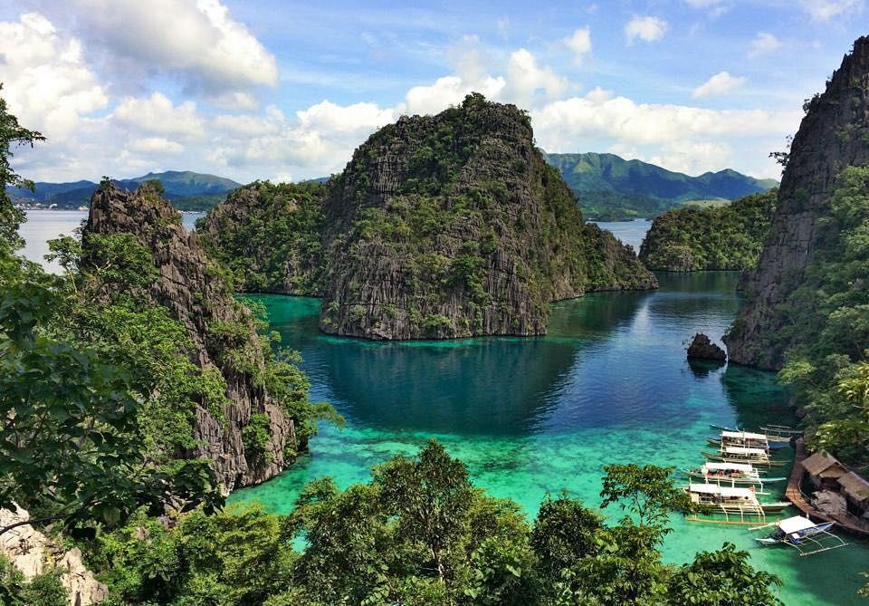

HOME Intramuros Mayon Volcano Kayangan lake Siargao
Kayangan Lake is dubbed as the cleanest lake in Asia. It can be found in Coron and the Calamian Islands, in Northern Palawan. Loved the views there, the word “breathtaking” appropriately describes it. The lake is quite deep, has crystal clear emerald colored waters, and limestone mountains towering around.
MMSU-CIT Copyright 2021 - Symon John Reyes